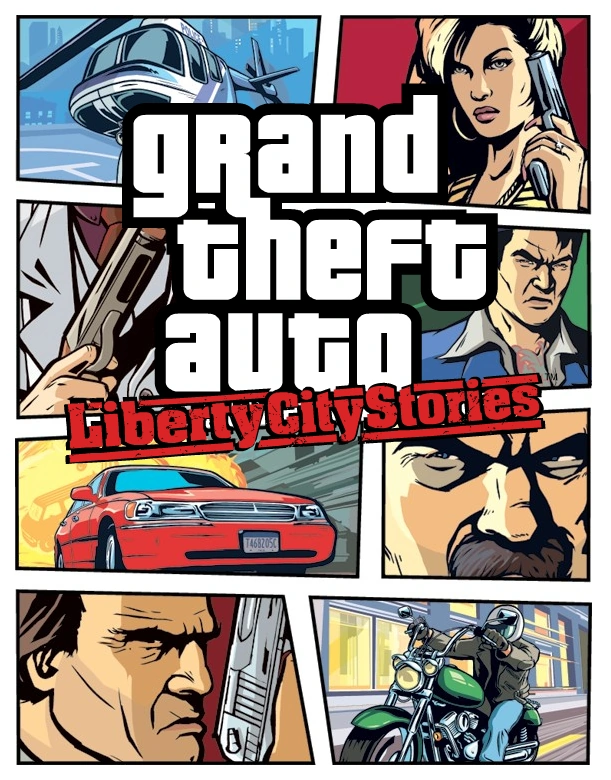

Recuerda que puedes cambiar de categoría con el menú superior o bien puedes regresar al apartado de resúmenes para buscar el título de tu preferencia

Grand Theft Auto Liberty City Stories
Datos generales:
Nombre: Grand Theft Auto: Liberty City Stories.
Nombre alternativo: N/A.
Año de salida: 24 de octubre del 2005.
Modo: Video juego de un jugador en tercera persona y multijugador (PSP)
Plataformas: PlayStation Portable (PSP), IOS, Android.
Empresa: RockStar games.
Información
Grand Theft Auto: Liberty City Stories es un juego más de la gran saga de juegos de GTA, principalmente salió como un juego para PlayStation Portable (PSP) debido a que este fue muy popular y el juego se adaptaba perfectamente a la plataforma. Como los anteriores GTA, este también es un juego de mundo abierto, en donde vas haciendo diferentes misiones para avanzar de ciudades, puedes robar autos, disparar armas entre otras muchas cosas que te permite hacer GTA.
Sinópsis
En esta entrega seremos el familiar de un importante personaje de la mafia Antonio “Toni” Cipriani, quien está en Liberty City para hacer diferentes misiones para miembros de la organización, todas las misiones se relacionan con la mafia y van aumentando de dificultad dependiendo de quien te de las misiones, ya que las misiones más importantes son las que le da el tío de Toni, incluyendo las que te ayudan a cambiar de ciudad. Un juego muy completo y sin pensarlo, bien hecho para la época.
Datos curiosos
Como todos lo anteriores GTA, este también tendrá una serie de trucos que te ayudarán a hacer más fácil la jugabilidad, sin embargo, no hay tantos como en otras entregas
Tiene una gran variedad de autos y motos y autos especiales como por ejemplo tanques de guerra que sólo aparecen con trucos o cuando de enfrentas a la policía hasta que consigues 5 estrellas
Dependiendo del número de estrellas de búsqueda que tengas, los policías comenzarán a aumentar su dificultad, tendrán mejores armas y te matarán más rápido si no huyes de ellos.
En este juego, hacen referencia a las drogas de una forma muy graciosa, ya que encuentras íconos con una pastilla, y cuando lo agarras todo a tu alrededor comienza a volverse lento.
Hay muchos “Easter Eggs” que puedes resolver haciendo ciertas cosas que hay alrededor del mapa, por ejemplo, hay misiones que te piden que consigas ciertos tipos de vehículos a cambio de una cantidad de dinero, entre otros.
Algunas partes del mapa de este juego aparecen en otros, por ejemplo, Liberty City aparece en GTA San Andreas, con los mismos establecimientos y lugares.